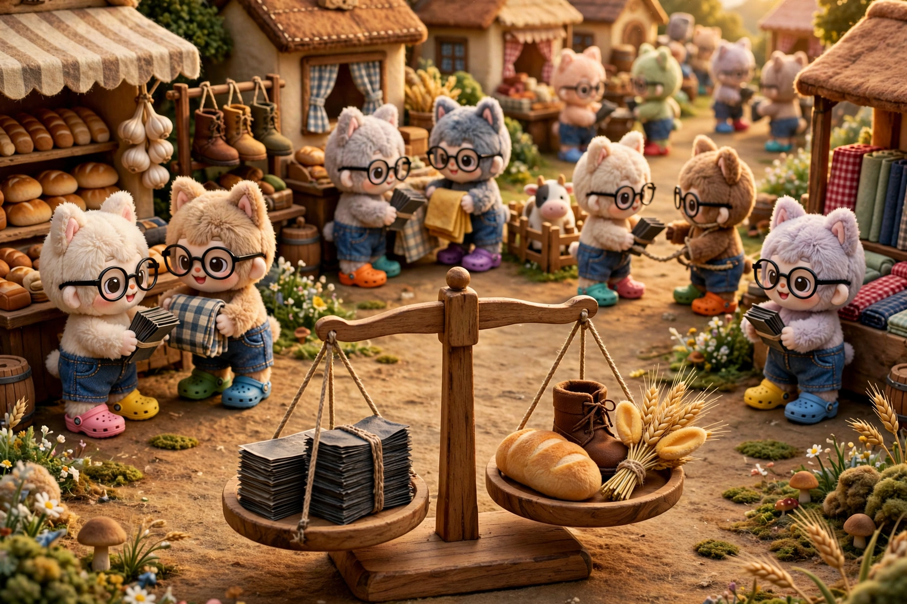

Hierarchy
In the beginning, special gray stones were money. However, the villagers ran into a problem with stone money: it was inflexible. So the villagers created debt, but a villager could not settle a debt by making more promises. And so banks emerged as a layer above stone money. Now villagers could settle their debts with banknotes, because banknotes were a promise from higher up the hierarchy. Then the banks ran into the same problem: a bank could not settle a debt to another bank by creating more of its own deposits. And so the central bank emerged as a layer above bank money. Now banks could settle their debts with reserves, because reserves were a promise from higher up the hierarchy. Finally, the banking systems themselves ran into the same problem but with currencies: one village could not settle a debt to another village by creating more of its own currency. And so a reserve currency emerged as a layer above. Now villages could settle their debts with reserve currency, because the reserve currency was a promise from higher up the hierarchy.
And so the pattern was: within each level, money was whatever the counterparty accepted as final settlement, and this could be promise if it was backed by the level above. The crow’s village sat atop this hierarchy, with a promise to convert black banknotes into real, physical, special black stones. But in the end, this too was just a promise, and the crow’s village was able to decree, by fiat, that black money just is. The crow’s village could do this because black money was the most widely accepted form of final settlement. But the system rests on trust. And if the system rests on trust, then the trust can erode through bad governance, corruption, poor fiscal policy, and competition. But for now, black money is the best money in the world.
